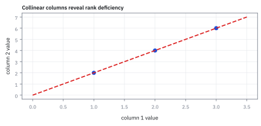
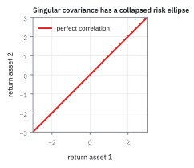
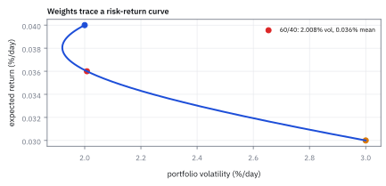

7.5 Linear Combinations
รวม correlated Normal returns ให้เป็น P&L scalar ที่คำนวณ mean และ variance ได้
พอร์ต 100 ล้านดอลลาร์ถือหุ้นไทย 50% หุ้นกู้ 30% ทองคำ 20% แต่ละตัวผันผวนปีละ 18%, 6%, 15% พอร์ตทั้งก้อนผันผวนปีละเท่าไร และปีแย่ 1 ใน 100 ปีขาดทุนเท่าไร?
เฉลย: 9.60% ต่อปี ไม่ใช่ 13.8% ที่ได้จากการเฉลี่ยความผันผวนตรง ๆ และผลตอบแทนพอร์ตเป็นระฆัง Normal เป๊ะ ปีแย่ 1 ใน 100 จึงอ่านได้ทันทีว่า −15.93% หรือขาดทุน 15.93 ล้านดอลลาร์ ราวครึ่งเดียวของพอร์ตหุ้นล้วน ไม่ต้องจำลองสักรอบ
Linear combination คือผลรวมของตัวแปรคูณน้ำหนัก; สำหรับ Multivariate Normal (MVN) ผลรวมนี้ยังเป็น Normal ใช้หาค่ากลางและความแกว่งของยอดรวมโดยตรง
ศัพท์ที่ใช้ในหัวข้อนี้
- linear combination
- weighted sum ของ random variables ที่ไม่มี product หรือ square ของ variables ใช้สร้าง portfolio return และส่วนต่างของสองสินทรัพย์
- correlated Normal
- ตัวแปรที่มี joint Normal distribution และอาจมี covariance กัน ใช้เป็น asset-return components ใน portfolio model
- Multivariate Normal (MVN) distribution
- joint distribution ที่ทุก linear combination เป็น Normal ใช้รับรองว่า portfolio combination ยังเป็น Normal
- portfolio return
- weighted return รวมของ holdings ใช้แปลง distribution ราย asset เป็น P&L percentage ของ book
- long-only weights
- weights ที่ไม่ติดลบเพราะ portfolio ถือซื้อแต่ละสินทรัพย์ ใช้ในข้อเปรียบเทียบที่ weighted-average volatility เป็น upper bound
- variance
- ค่ากระจายรอบ mean ใช้คำนวณ risk ของ linear combination ในหน่วย return²
- normal distribution
- distribution ที่กำหนดด้วย mean และ variance ใช้รับรองรูปของ linear combination ภายใต้ MVN
- standard deviation
- รากที่สองของ variance ใช้รายงาน volatility ในหน่วย return/day
- covariance
- ค่า co-movement ระหว่าง components ใช้สร้าง cross-term ของ portfolio variance
- Value at Risk (VaR)
- ขาดทุนที่ช่วงแย่ 1 ใน 100 ไม่เกินค่านี้ ใช้กำหนดทุนที่ต้องกันไว้รองรับความเสี่ยงของพอร์ต
- marginal risk
- covariance ของสินทรัพย์ตัวหนึ่งกับพอร์ตทั้งก้อน ใช้บอกว่าเพิ่มตัวนั้นอีกนิดความเสี่ยงพอร์ตขยับเท่าไร
- risk contribution
- ส่วนของ variance พอร์ตที่สินทรัพย์แต่ละตัวกินไป รวมกันได้ 100% ใช้ดูว่าความเสี่ยงกระจุกอยู่ที่ใคร
- risk parity
- วิธีตั้งน้ำหนักให้ทุกสินทรัพย์มี risk contribution เท่ากัน ใช้แก้พอร์ตที่ความเสี่ยงกระจุกอยู่ในหุ้น
- spread trade
- ซื้อตัวหนึ่งพร้อมขายอีกตัว กำไรมาจากส่วนต่างของสองผลตอบแทน ใช้เป็นตัวอย่างของ A = [1, −1]
- volatility
- ขนาดความผันผวนของ return ใช้เปรียบเทียบ risk บน risk–return curve
- SPX
- ดัชนี S&P 500 ของตลาดสหรัฐฯ ใช้เป็น component แรก
- QQQ
- กองทุน Nasdaq-100 ของตลาดสหรัฐฯ ใช้เป็น component ที่สอง
สัญลักษณ์ที่ใช้ในหัวข้อนี้
| สัญลักษณ์ | ความหมาย | หน่วย |
|---|---|---|
| $r$ | vector ของ asset returns | decimal return/day |
| $a$ | weight vector ของ linear combination | unitless |
| $L=a^{\mathsf T}r$ | combined return | decimal return/day |
| $\mu$ | mean vector | decimal return/day |
| $\Sigma$ | covariance matrix | return²/day² |
| $\sigma_L^2$ | variance ของ combined return | return²/day² |
| $C$ | matrix สามเหลี่ยมล่างที่ $C\,C^{\mathsf T}=\Sigma$ ใช้สร้าง MVN จากก้อนสุ่มอิสระ | return/day |
| $w$ | น้ำหนักหุ้นไทย หุ้นกู้ ทองคำ ในโจทย์เปิดเรื่อง เล่นบทเดียวกับ $a$ | unitless |
| $R_p$ | ผลตอบแทนพอร์ตสามสินทรัพย์ $w^{\mathsf T}X$ | decimal return/year |
| $\mu_p,\ \sigma_p$ | ค่าเฉลี่ยและความผันผวนของ $R_p$ | decimal return/year |
ที่มาที่ไป: จากหลายตัว กลับมาเหลือตัวเลขเดียว
พอร์ตคือการผสมสินทรัพย์หลายตัวเข้าด้วยกัน และสิ่งที่เจ้าของพอร์ตสนใจจริง ๆ มีตัวเดียว คือกำไรขาดทุนรวม
คำถามคือเมื่อผสมของที่เกี่ยวพันกันเข้าด้วยกัน ผลลัพธ์จะมีหน้าตาอย่างไร และคำตอบสำหรับระฆังคว่ำหลายมิตินั้นดีที่สุดเท่าที่จะหวังได้ คือผลลัพธ์ยังเป็นระฆังคว่ำเหมือนเดิม
สมบัติข้อนี้มีค่ามหาศาลในทางปฏิบัติ เพราะแปลว่าเราคำนวณความเสี่ยงของพอร์ตได้ด้วยสูตรปิด ไม่ต้องสุ่มเป็นล้านรอบ ซึ่งเร็วพอจะทำใหม่ได้ทุกนาที
และมันคือฐานของวิธีคำนวณ Value at Risk แบบที่ธนาคารส่วนใหญ่ใช้อยู่ทุกวันนี้
โจทย์ portfolio scalar
ให้ $r$ เป็น vector ของ SPX และ QQQ daily returns และ $a$ เป็น portfolio weights การรวม returns นี้ทำให้ risk service ต้องคำนวณ mean กับ variance ของผลลัพธ์ โดยเก็บ covariance ไว้ครบ
ขั้นที่ 1 — mean ของ linear combination
พอร์ตคือผลรวมถ่วงน้ำหนัก ค่าเฉลี่ยของมันบวกกันได้ตรง ๆ เสมอ ไม่มีเงื่อนไข ห้าบรรทัดนี้ยืนยันว่าสัญลักษณ์ตารางไม่ได้เพิ่มกฎใหม่ มันคือกฎของหัวข้อ 1.3 ที่เขียนสั้นลง
กางสัญลักษณ์ตารางออกเป็นผลรวมธรรมดาก่อน จะเห็นว่าพอร์ตก็คือการถ่วงน้ำหนักนั่นเอง จากนั้นใช้กฎบวกค่าเฉลี่ยจากหัวข้อ 1.3 ซึ่งใช้ได้เสมอ ไม่ต้องขอ independence แล้วดึงน้ำหนักออกนอกค่าเฉลี่ย เพราะน้ำหนักเป็นเลขที่เราเลือกเอง ไม่ได้สุ่ม
บรรทัดสุดท้ายรวบกลับเป็นสัญลักษณ์ตาราง ผลลัพธ์มีหน่วยเป็นผลตอบแทนต่อวัน เพราะน้ำหนักไม่มีหน่วย ห้าบรรทัดนี้ยืนยันว่าสัญลักษณ์ตารางไม่ได้เพิ่มกฎใหม่ มันคือกฎของหัวข้อ 1.3 ที่เขียนสั้นลง
ขั้นที่ 2 — variance ของ linear combination
ความเสี่ยงไม่ได้บวกกันง่ายแบบค่าเฉลี่ย ต้องมีพจน์ไขว้ที่มาจากการเคลื่อนไหวร่วม และหกบรรทัดนี้อธิบายว่าทำไม $a$ ถึงโผล่สองครั้งในสูตร ต่างจากฝั่งค่าเฉลี่ยที่โผล่ครั้งเดียว
ลบค่าเฉลี่ยของขั้นที่ 1 ออกแล้วดึงตัวร่วม จะเหลือน้ำหนักคูณระยะจากค่าเฉลี่ย จากนั้นใส่นิยาม variance จากหัวข้อ 1.4
กลเม็ดอยู่บรรทัดสาม: $a^{\mathsf{T}}(r-\mu)$ เป็นเลขตัวเดียว ไม่ใช่ตาราง การยกกำลังสองจึงเขียนเป็นตัวมันคูณทรานสโพสของตัวเองได้ แล้วใช้กฎทรานสโพสผลคูณคือสลับลำดับ $a$ จึงไปอยู่ขวาสุด
สุดท้ายดึง $a$ ทั้งสองข้างออกนอกค่าเฉลี่ย ก้อนตรงกลางที่เหลือคือ covariance matrix ตามนิยามในหัวข้อ 6.7 นี่คือเหตุผลที่ $a$ โผล่สองครั้ง ต่างจากฝั่งค่าเฉลี่ยที่โผล่ครั้งเดียว
ขั้นที่ 3 — สอง asset แบบขยาย
กางกรณีสองสินทรัพย์ออกมาให้เห็นทุกพจน์ เพราะเป็นรูปที่ใช้บ่อยที่สุดบนโต๊ะจริง และเป็นรูปเดียวกับที่หัวข้อ 6.5 สร้างไว้ ต่างกันแค่ตรงนี้มีน้ำหนักติดมาด้วย
บรรทัดแรกคือขั้นที่ 2 เขียนกางสำหรับสองสินทรัพย์ โดยเอาน้ำหนักเข้าไปคูณระยะจากค่าเฉลี่ยก่อน จากนั้นกระจาย $(a+b)^{2}=a^{2}+b^{2}+2ab$ แล้วเฉลี่ยทีละพจน์ตามกฎของหัวข้อ 1.3 น้ำหนักออกมาเป็นกำลังสองเพราะมันอยู่ในวงเล็บที่ถูกยกกำลังสอง
บรรทัดสุดท้ายอ่านสามก้อนกลับเป็นชื่อของมัน สองก้อนแรกคือความเสี่ยงของตัวเอง ก้อนที่สามคือ covariance ถ้ามันเป็นบวก ความเสี่ยงรวมจะสูงกว่าการบวกความเสี่ยงของตัวเองอย่างเดียว
ขั้นที่ 4 — Normal closure
สมบัติที่ทำให้ทุกอย่างง่ายขึ้นมากคือผลรวมของ Normal ยังเป็น Normal สูตรข้างล่างไม่ได้ขอให้เชื่อ มันคำนวณ MGF ออกมาแล้วเทียบกับของที่รู้จัก ชิ้นส่วนทุกชิ้นถูกพิสูจน์มาก่อนหน้านี้แล้วทั้งหมด
เป้าหมายคือพิสูจน์ว่าผลรวมของระฆังยังเป็นระฆัง วิธีคือคำนวณ Moment Generating Function (MGF) ของมันออกมา แล้วเทียบกับของที่รู้จัก เริ่มจากสร้าง MVN จากก้อนสุ่มอิสระ ซึ่งหัวข้อ 7.6 จะลงมือทำจริง คูณน้ำหนักเข้าไปแล้วได้ค่าคงที่บวกผลรวมถ่วงน้ำหนักของก้อนสุ่มอิสระ
บรรทัดสามแยกค่าเฉลี่ยของผลคูณเป็นผลคูณของค่าเฉลี่ย ทำได้เพราะก้อนสุ่มอิสระต่อกันตามหัวข้อ 6.5 แล้วแทนผล $\mathbb{E}[e^{az}]=e^{a^{2}/2}$ ที่พิสูจน์ด้วย integral ไว้ในหัวข้อ 1.10 จากนั้นแปลงความยาวของ $b$ กลับเป็นรูปที่มีแต่ $a$ กับ $\Sigma$
สิ่งที่ได้มีหน้าตาของ MGF ของระฆังตามหัวข้อ 7.2 พอดี และเครื่องมือชิ้นนี้ที่เหมือนกัน มาจาก distribution เดียวกัน ทุกชิ้นส่วนที่ใช้ถูกพิสูจน์มาก่อนหน้านี้แล้วทั้งหมด
ทำไมสมบัตินี้ถึงแบกทั้งบท — และทำไมมันคือนิยามของ MVN
ในงานจริงข้อนี้คือเหตุผลที่ risk report ทั้งใบคำนวณได้ด้วย matrix เดียว ไม่ว่าจะถามความเสี่ยงของสินทรัพย์เดี่ยว ของกลุ่ม หรือของทั้งพอร์ต ทุกคำถามคือการเลือก $A$ คนละแบบ แล้วบีบด้วยสูตรเดิม
และเป็นเหตุผลที่ Normal ได้รับความนิยมเกินหน้าตระกูลอื่น distribution ส่วนใหญ่บวกกันแล้วเปลี่ยนรูป พอเปลี่ยนรูปแล้วต้องคำนวณใหม่ทั้งหมด ส่วน Normal บวกกันแล้วยังเป็นตัวเอง เหลือแค่ปรับค่ากลางกับความแกว่ง
สมบัติข้อนี้ดูเรียบง่ายจนเหมือนของแถม แต่ลองเปลี่ยน $A$ ไปเรื่อย ๆ แล้วจะเห็นว่าเกือบทุกอย่างในบทนี้เป็นกรณีเฉพาะของมัน
เลือก $A$ เป็นแถวที่มีเลขหนึ่งตัวเดียว ก็ได้ marginal ของหัวข้อ 7.3 ฟรี ๆ เลือกเป็นแถวที่มีหนึ่งสองตัว ก็ได้ผลบวกของสองตัวแปร ใส่ 1 กับ −1 ก็ได้ส่วนต่างของสองสินทรัพย์ ซึ่งคือผลตอบแทนของ spread trade เลือกเป็นน้ำหนักพอร์ต ก็ได้ผลตอบแทนพอร์ตทั้งพอร์ตยุบเหลือตัวเลขเดียว
ที่สวยที่สุดคือบรรทัดสุดท้าย อ่านย้อนกลับได้ด้วย ถ้าผสมเชิงเส้นทุกแบบออกมาเป็นระฆังคว่ำ ก้อนตั้งต้นก็ต้องเป็น MVN นี่ไม่ใช่สมบัติของ MVN มันคือนิยามอีกฉบับของ MVN
นั่นคือเหตุผลที่นิยามฉบับนี้ใช้ได้แม้ตอน $\Sigma$ กลับไม่ได้ ซึ่งเป็นกรณีที่สูตร density เขียนไม่ออก เช่นพอร์ตที่มีสินทรัพย์ซ้ำกันสองตัว
ขั้นที่ 5 — คำตอบของ portfolio 60/40
ผลรวมเชิงเส้นของสองตัว: ค่าเฉลี่ยบวกกันตรง ๆ แต่ variance ต้องมีพจน์ไขว้ด้วย เพราะสองตัวขยับไปด้วยกันบางส่วน
พจน์กลางคือส่วนที่มาจากการเคลื่อนไหวร่วม ถ้าสองตัวเป็นอิสระกันสนิท พจน์นี้จะเป็นศูนย์ และ $\sigma_L$ จะเหลือเพียง 1.70%
สังเกตว่า 2.008% ต่ำกว่าค่าเฉลี่ยถ่วงน้ำหนักของ volatility สองตัว การผสมจึงลดความเสี่ยงได้ แม้จะไม่ได้ลดจนหมด
สามตัวเลขวางเรียงกัน: อิสระกันสนิท $\sqrt{0.000288}=1.70\%$ ของจริง $2.008\%$ และค่าเฉลี่ยถ่วงน้ำหนักของ volatility $0.6(2\%)+0.4(3\%)=2.4\%$ ของจริงอยู่ระหว่างสองขั้ว: covariance บวกดันขึ้นจาก 1.70 แต่ยังต่ำกว่า 2.4 เพราะสองตัวไม่ได้ขยับตามกันเป๊ะ ($\rho=0.4$ ไม่ใช่ 1)
ขั้นที่ 6 — โจทย์เปิดเรื่อง: เขียนพอร์ตเป็น wᵀX แล้วหาค่าเฉลี่ย
ของที่โจทย์ให้: น้ำหนัก w = (0.50, 0.30, 0.20) บนหุ้นไทย หุ้นกู้ ทองคำ ผลตอบแทนเฉลี่ยรายปี μ = (0.09, 0.03, 0.05) ความผันผวน 18%, 6%, 15% และ Σ ตัวเดียวกับหัวข้อ 7.3 น้ำหนักรวมได้ 1.00 พอดี ไม่มีเงินสดหรือเงินกู้ พอร์ตจึงเป็นรูปทั่วไปของหัวข้อนี้ โดย A = wᵀ และค่าคงที่ c = 0 ส่วน w เล่นบทเดียวกับ a ในขั้นที่ 1 ถึง 4
ค่าเฉลี่ยของพอร์ตคือค่าเฉลี่ยถ่วงน้ำหนักธรรมดาตามขั้นที่ 1 เช็กขนาดก่อน แถว 1 × 3 คูณคอลัมน์ 3 × 1 ได้ตัวเลขเดียว ผล 6.40% ต้องอยู่ระหว่าง 3% กับ 9% และเอียงไปทาง 9% เพราะหุ้นมีน้ำหนักมากที่สุด
บรรทัดเหล่านี้ไม่มี correlation เลย เพราะขั้นที่ 1 ไม่ได้ขอ independence ความเกี่ยวพันมีผลกับความเสี่ยงเท่านั้น นี่คือรากของทฤษฎีพอร์ต การกระจายความเสี่ยงเป็นของฟรี เพราะมันลด σ โดยไม่แตะผลตอบแทนเฉลี่ย
ขั้นที่ 7 — คูณ Σw ทีละแถว: แต่ละตัวเคลื่อนไปกับพอร์ตแค่ไหน
ขั้นที่ 2 บอกว่า variance คือ wᵀΣw ทำทีละชั้น คูณ Σw ก่อนได้ตัวเลขสามตัว ขนาด (3 × 3)(3 × 1) = 3 × 1 แต่ละตัวคือ covariance ของสินทรัพย์นั้นกับพอร์ตทั้งก้อน คิดในหน่วย 10⁻⁶ ให้ตัวเลขสั้น เช่น 0.03240 = 32400 × 10⁻⁶
บรรทัดแรกบอกว่าทำไม Σw มีความหมาย covariance คือค่าเฉลี่ยของผลคูณ และค่าเฉลี่ยแยกผลรวมได้ตามขั้นที่ 1 มันจึงกระจายเข้าไปในพอร์ตทีละตัว ช่องที่ i คือ marginal risk ของตัวนั้น และเป็น vector เดียวกับที่โผล่ในการหาพอร์ต variance ต่ำสุดของหัวข้อ 17.3
หุ้นกู้ถือ 30% แต่ได้แค่ 0.000450 เพราะสองพจน์แรกของแถวที่สองหักล้างกันพอดี correlation −0.20 กับหุ้นทำงานตรงนั้น หุ้นกู้จึงแทบไม่เพิ่มความเสี่ยงให้พอร์ตเลย
ขั้นที่ 8 — คูณ w อีกชั้น: variance 0.009216 และใครกินความเสี่ยงเท่าไร
เอา vector Σw จากขั้นที่ 7 มาถ่วงด้วย w อีกครั้ง ได้ variance ของพอร์ต แล้วถอดรากเป็นความผันผวน ยังคิดในหน่วย 10⁻⁶ เหมือนขั้นที่ 7
แต่ละพจน์ของผลรวมคือน้ำหนักคูณ covariance ของตัวนั้นกับพอร์ต สามพจน์รวมกันเป็น variance ทั้งก้อน จึงแบ่งได้ตรง ๆ ว่าใครกินความเสี่ยงไปเท่าไร ส่วนแบ่งนี้เรียกว่า risk contribution และรวมกันได้ 100% พอดี
หุ้นถือครึ่งเดียวในหน่วยเงิน แต่กิน 86% ของ variance หุ้นกู้ถือ 30% แต่กินแค่ 1.5% ช่องว่างนี้คือเหตุผลที่มีกองทุนแบบ risk parity ซึ่งตั้งน้ำหนักให้ทุกตัวกินความเสี่ยงเท่ากัน
ขั้นที่ 9 — ทำไมได้ 9.60% ไม่ใช่ 13.8%: แยก variance เป็นสองก้อน
ถ้าทุกคู่มี correlation เท่ากับ 1 ช่อง ij ของ Σ คือ σᵢσⱼ ผลรวมคู่จึงรวบเป็นกำลังสองได้ (คิดในหน่วย %) จากนั้นแยก variance จริงเป็นพจน์ทแยงมุมกับพจน์ไขว้ตามขั้นที่ 3 ในหน่วย 10⁻⁶ พจน์ไขว้ต้องคูณ 2 เพราะ Σ สมมาตร ช่อง 12 กับ 21 จึงถูกนับสองครั้ง
ถ้าทุกคู่ขยับตามกันเป๊ะ ความผันผวนบวกกันตรง ๆ ได้ 13.8% นี่คือเพดานของพอร์ตที่ถือซื้ออย่างเดียว ของจริง 9.60% หายไป 4.2 จุด และบรรทัดสุดท้ายกลับมาได้ 0.009216 ตรงกับขั้นที่ 8
ก้อนทแยงมุมคือกรณีทุกตัวอิสระกัน ได้ 9.66% แล้ว เพราะน้ำหนักเข้ามาเป็นกำลังสอง 0.5² = 0.25 ไม่ใช่ 0.5 ก้อนไขว้ −0.000108 ลดต่อจาก 9.66% เหลือ 9.60% แค่ 0.06 จุด ติดลบเพราะคู่หุ้นกับหุ้นกู้ −0.20 หนักพอกลบอีกสองคู่ที่เป็นบวก
บทเรียนคือประโยชน์เกือบทั้งหมดมาจากการไม่ใส่ไข่ในตะกร้าเดียว การไล่หาสินทรัพย์ที่ correlation ติดลบให้ผลน้อยกว่าที่คิด และ correlation ติดลบมักหายไปตอนวิกฤตพอดี
ขั้นที่ 10 — พอร์ตเป็น Normal เป๊ะ แล้วอ่าน VaR 99% รายปี
ขั้นที่ 4 คำนวณ MGF ไว้สำหรับน้ำหนักใด ๆ แทนด้วย w ตรง ๆ แล้วเทียบกับ MGF ของ Normal ตัวเดียวในหัวข้อ 7.2 จากนั้นอ่านหางซ้ายที่เหลือพื้นที่ 1% ซึ่งอยู่ที่ −2.326 σ เพราะ Φ(−2.326) = 0.01
MGF ตรงกันทุกพจน์แปลว่า distribution เดียวกัน พอร์ตจึงเป็น Normal เป๊ะ ไม่ใช่ประมาณ ปัญหาสามมิติหรือ 500 มิติยุบเหลือมิติเดียวที่อ่านจากตาราง z ได้ทันที ตัวแปรหางอ้วนส่วนใหญ่บวกกันแล้วไม่ได้ตระกูลเดิมและไม่มีสูตรปิด
ปีแย่ 1 ใน 100 พอร์ตขาดทุน 15.93% หรือ 15.93 ล้านดอลลาร์บนทุน 100 ล้าน ถือหุ้นล้วนจะเป็น −32.87% กระจายแล้ว VaR ดีขึ้นราวครึ่ง โดยยอมเสียผลตอบแทนเฉลี่ย 2.6 จุด
ตัวเลขเป็นรายปีเพราะ μ และ σ เป็นรายปี รายวันต้องใช้ σ/√252 และ μ/252 ได้ราว −1.38% แถวสุดท้ายคือวันวิกฤตที่ทุกคู่วิ่งเข้าหา 1 σ กลับไปเป็น 13.8% และ VaR แย่ลงเป็น −25.70% พจน์ไขว้ที่เคยช่วยหายไปตอนที่ต้องการมันที่สุด
แล้วเอาไปใช้ทำอะไรได้จริงบ้าง
การรวมผลตอบแทนที่เกี่ยวพันกันให้เหลือตัวเลขเดียว คือการคำนวณกำไรขาดทุนของพอร์ต
ใช้คำนวณกำไรขาดทุนรวมและความเสี่ยงรวมของพอร์ต จากผลตอบแทนของสินทรัพย์แต่ละตัว
ใช้พิสูจน์ว่าการผสมสินทรัพย์ลดความเสี่ยงได้จริง โดยเทียบกับกรณีที่ไม่มีการผสม
ใช้เป็นฐานของ Value at Risk เพราะเมื่อรวมแล้วยังเป็นรูประฆังคว่ำ จึงอ่านค่าที่หางได้ทันที
Figure 7.5a — linear combination of correlated Normals

เส้นแดงคือทิศของ weight 60/40 ที่ใช้ project joint cloud เป็น portfolio return หนึ่งตัว; จุดทุกจุดยังมาจาก mean และ covariance ชุดเดียวกับหัวข้อ 7.1
Figure 7.5b — variance cross-term

เส้นเทาตัด covariance ทิ้ง ส่วนเส้นแดงบวก positive cross-term กลับเข้าไป; หน่วยบนแกนคือ percentage-point squared ต่อวัน ไม่ใช่ basis-point squared
Figure 7.5c — portfolio return distribution

simulation 5,000 จุดแสดง SPX, QQQ และ portfolio 60/40; ภายใต้ MVN แต่ละ projection ยังมีรูป Normal และใช้ mean ที่ระบุ ไม่ได้บังคับ centre เป็นศูนย์
Figure 7.5d — mean and volatility by weight

จุดแดงคือ portfolio 60/40 ที่ expected return 0.036% และ daily volatility 2.008%; เส้นทั้งเส้นรวม covariance 0.00024 ไว้แล้ว
คำตอบ — พอร์ตสามสินทรัพย์ 100 ล้านดอลลาร์
คำถาม: พอร์ตหุ้นไทย 50% หุ้นกู้ 30% ทองคำ 20% ผันผวนปีละเท่าไร และปีแย่ 1 ใน 100 ขาดทุนเท่าไร?
ของที่มี: ขั้นที่ 6 ถึง 10
1. ผลตอบแทนเฉลี่ย 6.40% ต่อปี
2. ความผันผวน 9.60% ต่อปี ต่ำกว่าการเฉลี่ยความผันผวนตรง ๆ (13.8%) อยู่ 4.2 จุด ส่วนใหญ่มาจากน้ำหนักที่เข้ามาเป็นกำลังสอง ไม่ใช่ correlation ติดลบ
3. ผลตอบแทนพอร์ตเป็น Normal เป๊ะ ค่าเฉลี่ย 6.40% ความผันผวน 9.60% VaR 99% รายปี −15.93% หรือ −15,930,000 ดอลลาร์ ราวครึ่งหนึ่งของหุ้นล้วน (−32.87%)
ตรวจเองใน 10 วินาที: 4.5 + 0.9 + 1.0 = 6.4 และ 6.4 − 2.326 × 9.6 ≈ −15.9
แปลว่าอะไร: สองบรรทัด wᵀμ กับ wᵀΣw คือเครื่องยนต์ของระบบความเสี่ยง เปลี่ยนน้ำหนักแล้วคิดใหม่ได้ทันทีโดยไม่ต้องจำลอง ราคาที่จ่ายคือสมมติฐานสองข้อ หางจริงอ้วนกว่า Normal จึงประเมิน −15.93% ต่ำไป และ Σ ไม่คงที่ วันวิกฤตความผันผวนวิ่งเข้าหา 13.8%
โค้ดตรวจพอร์ตสามสินทรัพย์
import numpy as np
S=np.array([[0.03240,-0.00216,0.00135],[-0.00216,0.00360,0.00225],[0.00135,0.00225,0.02250]])
w=np.array([0.5,0.3,0.2]); mu=np.array([0.09,0.03,0.05])
assert abs(w@mu-0.064)<1e-12
assert np.allclose(S@w,[0.015822,0.000450,0.005850])
v=w@S@w; assert abs(v-0.009216)<1e-12 and abs(np.sqrt(v)-0.096)<1e-12
assert np.allclose(w*(S@w)/v,[0.8584,0.0146,0.1270],atol=1e-4)
sd=np.sqrt(np.diag(S)); assert abs(w@sd-0.138)<1e-12
R=S/np.outer(sd,sd); assert abs(w@R@w-0.36)<1e-12
assert abs((0.064-2.326*0.096)-(-0.159296))<1e-9โค้ดนี้ตรวจค่าเฉลี่ย 6.40% vector Σw variance 0.009216 ส่วนแบ่งความเสี่ยง 85.8/1.5/12.7% ค่าเฉลี่ยความผันผวน 13.8% ค่า 0.36 ที่ได้เมื่อใส่ correlation matrix ผิดที่ และ VaR 99% −15.93%
กับดัก: ใช้ weighted average ของ standard deviations
สำหรับ long-only weights และ correlation ไม่เกินหนึ่ง weighted average volatility เป็น upper bound ไม่ใช่สูตร portfolio volatility; ส่วนการตัด covariance ทิ้งอาจต่ำไปเมื่อ covariance เป็นบวก ให้คำนวณ $a^{\mathsf{T}}\Sigma a$ ก่อน แล้วค่อยถอด square root
ในพอร์ตสามสินทรัพย์ การเฉลี่ยความผันผวนได้ 13.8% เกินของจริง 9.60% ไป 44% สิ่งที่บวกกันได้คือ variance พร้อมพจน์ไขว้ ต้องเดิน σ → σ² → รวม → ถอดรากกลับเสมอ
อีกจุดคือต้องใช้ covariance matrix ไม่ใช่ correlation matrix ถ้าเผลอใส่ correlation matrix จะได้ 0.36 และถอดรากเป็น 60% ต่อปี ซึ่งผิดชัดทันที เพราะไม่มีสินทรัพย์ตัวไหนผันผวนเกิน 18%
ข้อจำกัด: วิธีนี้สมมติอะไร และของจริงเป็นอย่างไร
| เรื่อง | วิธีนี้สมมติว่า | ของจริงเป็นอย่างไร | ผลที่ตามมาเวลาใช้งาน |
|---|---|---|---|
| รูปที่คงอยู่ | ผลรวมยังเป็นระฆังคว่ำ | จริงเฉพาะเมื่อตัวตั้งต้นเป็นระฆังคว่ำจริง | ถ้าตัวตั้งต้นหางอ้วน ผลรวมก็หางอ้วน และสูตรที่ใช้จะประเมินความเสี่ยงต่ำเกินไป |
| น้ำหนักคงที่ | น้ำหนักไม่เปลี่ยนระหว่างช่วง | ราคาที่ขยับทำให้น้ำหนักเปลี่ยนเอง | ต้องปรับพอร์ตหรือคิดผลของการไม่ปรับเข้าไปด้วย |
| ความเกี่ยวพัน | รู้ความเกี่ยวพันแน่นอน | ประมาณมาและเปลี่ยนตลอด | ความเสี่ยงรวมที่คำนวณได้ต่ำเกินจริงเมื่อความเกี่ยวพันพุ่งขึ้นในวิกฤติ |
แถวแรกคือขอบเขตที่สำคัญที่สุด และเป็นเหตุผลที่ต้องเสริมด้วยการจำลองในหัวข้อ 17.5
สรุปที่ใช้ได้จริง
- linear combination ของ MVN ยังเป็น Normal
- mean map ด้วย $a^{\mathsf T}\mu$ และ variance ด้วย $a^{\mathsf T}\Sigma a$
- covariance cross-term เป็นตัวกำหนดว่าการรวมลดหรือเพิ่ม risk
- อย่าเฉลี่ย standard deviations ตรง ๆ
- พอร์ต 50/30/20 ผันผวน 9.60% ไม่ใช่ 13.8% และ VaR 99% รายปี −15.93% ประโยชน์ส่วนใหญ่มาจากน้ำหนักที่เข้ามาเป็นกำลังสอง